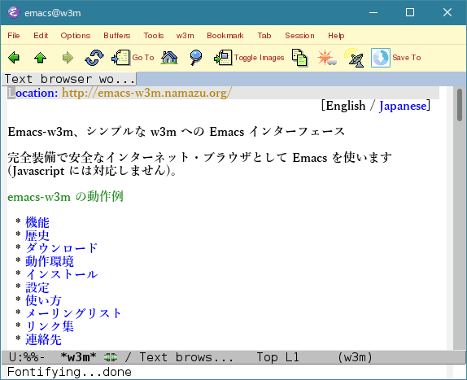

[English / Japanese]

かつて Emacs/W3 という独自のプロジェクトがあり、その時代の Emacs で最も人気のあるウェブ・ブラウザだったのですが、 その遅い動作に苦しめられました。そこで、伊藤彰則さんによる WWW の機能があるテキストモードのペイジャー w3m を使って代替品を作ろうということになったのです。 2018年現在、プロジェクトは活発に開発を続け、 20年以上に渡って持続していますが、2005年からは CVS リポジトリーから直接 ローリング・リリース による更新を行なっています (もっとも第三者による非公式なミラーが MELPA と github にありますが)。 以下は過去に安定版のリリースが行なわれた経過点の歴史です:
This project uses the cvs[1] version control system, so in order to download the current version from the official source, you need to have cvs installed.
% cvs -d :pserver:anonymous@cvs.namazu.org:/storage/cvsroot login CVS password: # No password is set. Just hit Enter/Return key. % cvs -d :pserver:anonymous@cvs.namazu.org:/storage/cvsroot co emacs-w3m
Source code access with ViewCVS is also available.
emacs-w3m-1.4.4.tar.gz (March 25th, 2005)
emacs-w3m-1.4.3.tar.gz (August 17th, 2004)
emacs-w3m-1.4.2.tar.gz (July 14th, 2004)
emacs-w3m-1.4.1.tar.gz (July 7th, 2004)
emacs-w3m-1.4.tar.gz (April 29th, 2004)
emacs-w3m-1.3.6.tar.gz (July 18th, 2003)
emacs-w3m-1.3.5.tar.gz (July 5th, 2003)
emacs-w3m-1.3.4.tar.gz (June 18th, 2003)
emacs-w3m-1.3.3.tar.gz (October 25th, 2002)
emacs-w3m-1.3.2.tar.gz (September 3rd, 2002)
w3m_el-1.3.1.tar.gz (July 17th, 2002)
w3m_el-1.3.tar.gz (July 7th, 2002)
w3m_el-1.2.8.tar.gz (June 20th, 2002)
w3m_el-1.2.7.tar.gz (June 3rd, 2002)
w3m_el-1.2.6.tar.gz (March 12th, 2002)
w3m_el-1.2.5.tar.gz (March 2nd, 2002)
w3m_el-1.2.4.tar.gz (January 8th, 2002)
w3m_el-1.2.3.tar.gz (December 21st, 2001)
w3m_el-1.2.2.tar.gz (December 6th, 2001)
w3m_el-1.2.1.tar.gz (November 12th, 2001)
w3m_el-1.2.tar.gz (November 6th, 2001)
w3m_el-1.0.tar.gz (May 9th, 2001)
-lang=many'
で作られたものでなければなりません。また、これを動かすためには前もって
libmoe
パッケージをインストールしておかなければなりません。その w3mmee
が使えるかどうかを知るには、これを実行して、
w3mmee -version
その結果に 'moe-VERSION' と `lang=many'
というものが表れることを確認してください。
FLIM'
をインストールする必要があります。
BITMAP-MULE
パッケージをインストールしておくと、
WEB ページのインライン画像を白黒表示させることができます。
ここ (FIXME)
にある最新のものを使ってください。
注意: APEL XEmacs パッケージ (SUMO に含まれています) のバージョン 1.32 より古いものは使えません。 もしすでにそのような版のパッケージがインストールされているならば、 それを更新するか、または上記のリンクで示した APEL で置き換えなければなりません。
もし XEmacs 21.x を使っているのであれば
gifsicle
プログラムをインストールして下さい。現在すべての XEmacs 21.x
にはオプティマイズされたアニメーション gif
を正常に表示しなかったり、ある種のインターレース gif
を表示するとクラッシュしてしまうバグがあります。
Emacs-w3m は gif データを XEmacs 21.x
で扱うことができる形式に変換するために gifsicle
を利用します。
APEL パッケージ、「新しい custom」パッケージ、
および regexp-opt.el(c) モジュールが必要です。
詳しくは次の Emacs 19.34
についての説明 を注意して参照してください。
BITMAP-MULE パッケージを用いて
WEB ページのインライン画像を白黒表示させる場合には、パッチ
(patches/mule-2.3@19.34.patch)
を適用して Mule を作り直すことを強くお勧めします。
パッチは emacs-w3m の配布に含まれています。そうしないと Mule
が固まってしまい、Mule を kill せざるを得なくなるでしょう。
APEL パッケージ、「新しい custom」パッケージ、
および regexp-opt.el(c) モジュールが必要です。
Emacs-w3m は
さらに、emacs-w3m は regexp-opt.el(c)
モジュールを必要としますが、Emacs 19.34 や Mule 2.3 のような古い
Emacsen には含まれていません。そのようなバージョンの Emacs
を使っている場合は、あらかじめ以下のように
regexp-opt.el(c)
モジュールをインストールする必要があります。
% cp attic/regexp-opt.el /usr/local/share/emacs/site-lisp % cd /usr/local/share/emacs/site-lisp % emacs -q -no-site-file -batch -f batch-byte-compile regexp-opt.el
(もし Mule をお使いならば，おそらくパス名やコマンド名として `emacs' の代わりに `mule' と言う必要があるでしょう．)
Before installing emacs-w3m, check whether your environment meets the requirements.
At the first, run the configure script.
% ./configure
If you've installed APEL, FLIM or something in non-standard
directories other than the default load-path, you
must specify them using the --with-addpath option as
follows:
% ./configure --with-addpath=/opt/share/apel:/opt/share/flim
Next, execute the following commands to install emacs-w3m to an appropriate directory.
% make # make install
If you are using Emacs 21.1 and newer or XEmacs, it is recommended to install icon image files. To do this:
# make install-icons
You can also install emacs-w3m as an XEmacs package using make install-package instead of make install.
% make # make install-package
In this case, you don't have to execute make install-icons.
If you cannot execute the configure script on your
system, or if no make command is available, execute
the following command:
# emacs -batch -q -no-site-file -l w3mhack.el NONE -f w3mhack-nonunix-install
If APEL, FLIM (or any other library) aren't installed in the ordinary places, the installer will leave them out. In such a case, it is necessary to tell those places to the installer as shown below:
# emacs -batch -q -no-site-file -l w3mhack.el //c/share/apel://c/share/flim -f w3mhack-nonunix-install
Emacs-w3m has many configuration options, but the minimum that is required
is just to put this line into your ~/.emacs file:
(require 'w3m-load)
Just type M-x w3m, and you can use emacs-w3m.
In order to handle text/html part with emacs-w3m under SEMI MUAs such as
Wanderlust, put the following line in your
~/.emacs file:
(require 'mime-w3m)
For more details, see Info manual, or browse the emacs-w3m customization group within emacs.
The project mailing list, emacs-w3m@namazu.org, is
bi-lingual Japanese / English. It is open to the public, and its
archive is accessible via the emacs-w3m
mailing list archive. You can also subscribe to the
gmane.emacs.w3m newsgroup which is gateway'd to this list
bidirectionally (connect to news.gmane.org using nntp).
If you want to subscribe to this list, check the disclaimer and send a mail containing
subscribe Your Name
(not your email address) in the body to
emacs-w3m-ctl@namazu.org.
To unsubscribe, send a mail containing just
# bye
in the body to emacs-w3m-ctl@namazu.org.
Thanks to many of the other people for the great contributions.
In order to contact us, please send a mail to
emacs-w3m@namazu.org. This
mailing list is gateway'd to the
gmane.emacs.w3m newsgroup bidirectionally and accepts even messages
posted from nonsubscribers.